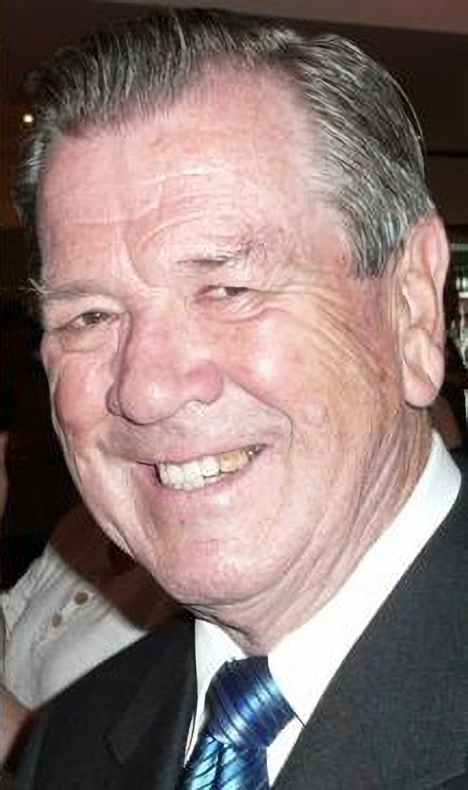

The website of the Quintrell family - by Neil Quintrell
Preface
By Lynn Jarvis, Grandson of Alice Jarvis (nee Scott), sister of Olive, Neil's Mother.

{kind=link}
To begin with, here is a tribute by adelaidenow.com.au
{kind=link}
Lawrence Neil Quintrell, Dip. Pharm. (Adel.) B.A., Dip. App. Psych. 1982
Pharmacist, psychologist, educator
Born: September 15, 1937; Adelaide
Died: May 20, 2011; Adelaide
NEIL Quintrell, second son of Norman and Olive, was a pharmacist who switched to psychology, then returned to pharmacy, teaching thousands of pharmacy students over the decades. Neil attended Black Forest Primary and Unley High schools where his talent already shone - he topped his class most of those years. He studied at the University of Adelaide and achieved his pharmacy diploma in 1959, doing his apprenticeship with R J Coultas in Adelaide. Neil played cricket and baseball throughout his school and university years, but baseball was his first love and he played until he was in his 40s, always one of the most enthusiastic members of a team. He was proud of his 1958 Adelaide University Baseball Blue.
In 1959 Neil married Charmian Wilson, who became his loving partner for 52 years. They had four daughters. He also became a supporting loving uncle of his brother's children in British Columbia in Canada, accepting them as part of his family. He was a pharmacist-manager at Elizabeth and Marion until 1971, then he owned and ran pharmacies at Bedford Park and Adelaide until 1983.
But in the late 1970s he also began tutoring at the school of medicine at Flinders and Adelaide universities. In 1982 he became a registered psychologist and he was a partner in Stress Management Consultants aiding thousands of South Australians. From 1981 until 1993 he was associate director, then head, of the Health and Counselling Service at Flinders University after which he was appointed head of the Academic Support Services there and which included setting policies for students with disabilities and support services for foreign students. Neil was chairman of the Psychologists Council of SA (1987-1988) and vice-president of Australian and New Zealand Student Services Association (1994-1995) among his many contributions. Neil was director of Interact Consultancies, a private firm of educational and research services, 1997-2000.
This included lecturing, tutoring, researching and preparing training manuals and helping supervise PhD students. From 2001 he was senior lecturer at UniSA's School of Pharmaceutical, Molecular and Biomedical Sciences, which counted him as a valued colleague. That university cites his "most recent gift" to it as his written history of the education of pharmacists and medical scientists in SA, From Craft to Science. It was among many of his published works and written in his retirement, as was another commissioned book In the Public Interest on the Pharmacy Board of SA 1891-2010.
Writing was his passion. The Uniting Church is still singing many of his words in worship. He wrote two unpublished novels, some plays, several family stories, and hundreds of poems. For many years he had been an active supporter of Oxfam Australia, leading on state committee, instigating many advances and encouraging and helping wherever possible. Neil Quintrell leaves his wife Charmian, their daughters Chalien, Lorene, Frai and Ricki, and eight grandchildren.